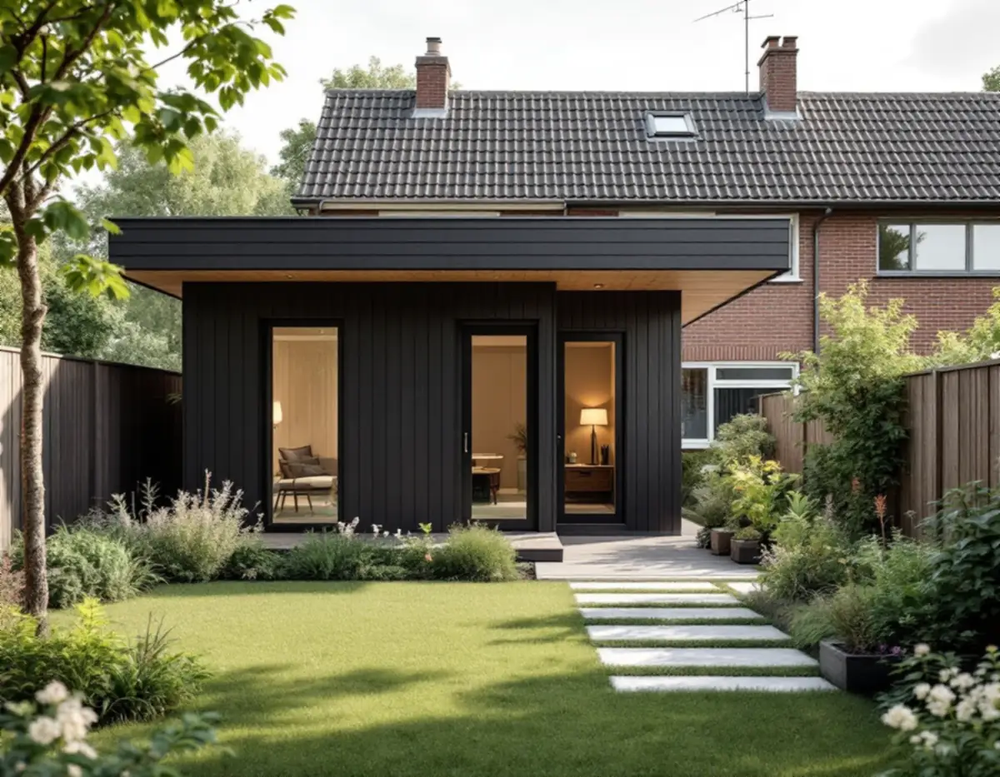
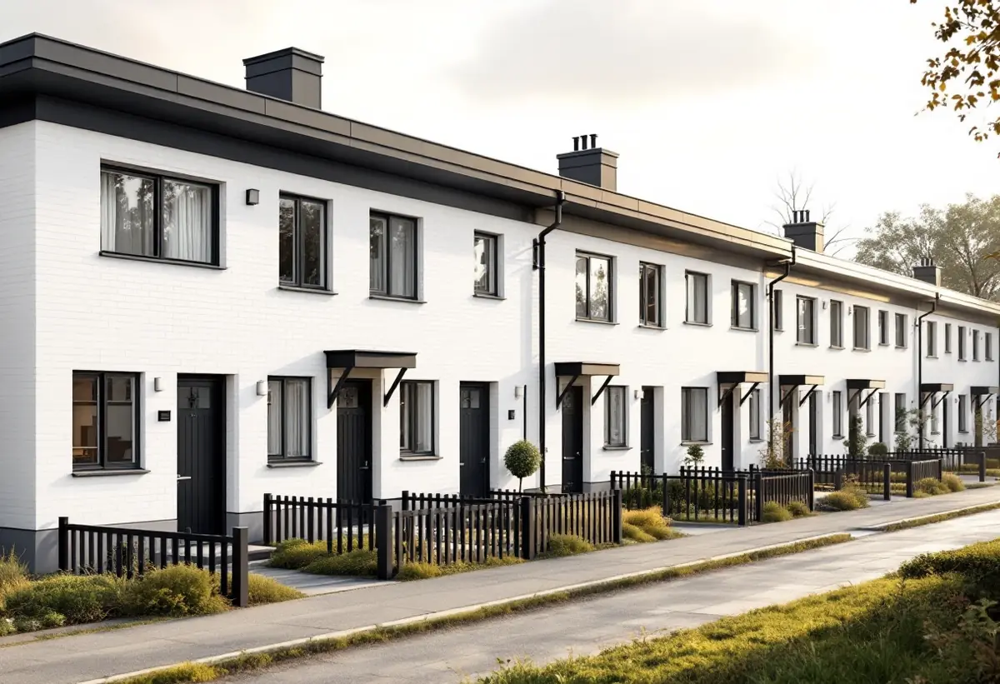
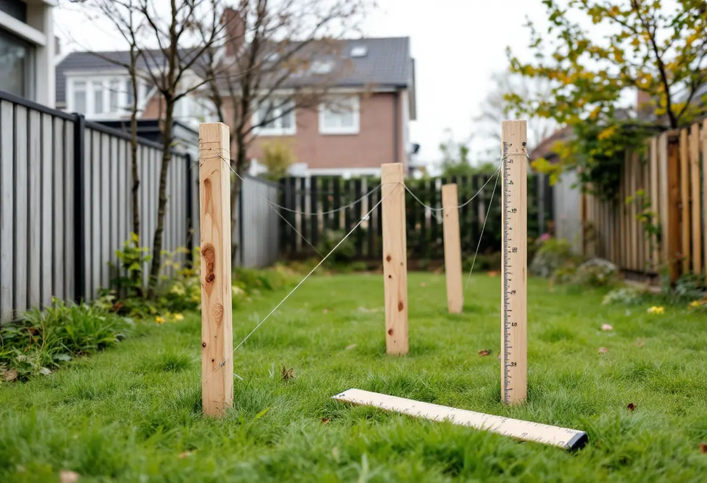

Platsbesök
Vi mäter tomten, radhuset och avstånden till gränserna.
I Sätra, Bredäng och Vårberg står de flesta småhus i gruppbyggda rader på små tomter. Ett komplementbostadshus kan ändå vara möjligt, men tomtens mått och grannarna avgör mycket. Geal Entreprenad AB mäter upp tomten, räknar på reglerna och bygger huset nyckelfärdigt.

Stadens vägledning Varsam utveckling av småhus- och villaområden beskriver småhusen i de storskaliga stadsdelarna – Bredäng, Sätra, Skärholmen och Vårberg – som strikt grupperade radhus, kedjehus, villor och atriumhus på små tomter. Färgsättningen är enhetlig inom husgrupperna, och taken är oftast platta eller pulpettak.
Enligt områdesfakta för 2025 fanns 1 991 småhus i Skärholmens stadsdelsområde, nästan alla med äganderätt. I Sätra fanns 536 ägda småhus och i Bredäng 320. Det betyder att det är du som fastighetsägare som ansvarar för att ett lovfritt hus uppfyller kraven.

Vägledningen skriver att tillbyggnadsmöjligheterna i grupphusområdena ofta är mycket begränsade, men att en bod i vissa fall kan rymmas. Den ber fastighetsägaren utgå från husets volym, proportioner och takform och betonar att det gäller även om du bygger ett skärmtak, ett inglasat uterum eller en bod. Det vanligaste är att placera sådant mot trädgårdssidan och undvika förändringar mot gatan.
Ett komplementbostadshus vid ett radhus med platt tak blir därför ofta en enkel låg volym med platt eller svagt lutande tak, i material och kulörer som går igen i husgruppen. Bredäng står i vägledningens tabell som kulturhistoriskt värdefull miljö, och där krävs bygglov även för ett hus som annars är lovfritt.
Stockholms stad skriver att ett lovfritt komplementbostadshus ska stå 4,5 meter från gränsen mot granne, samfällighet eller allmän plats. På en smal radhustomt är det sällan möjligt, och då behövs skriftliga medgivanden. Medgivandet ska innehålla fastighetsbeteckning, vilken åtgärd det gäller, en situationsplan med avståndet till gränsen och underskrifter från berörda grannar. Får du inte medgivandena krävs bygglov.
Två andra regler hjälper på en liten tomt. Huset får strida mot detaljplanen, till exempel stå på prickmark som annars inte får bebyggas. Men det ska ha en mindre byggnadsarea än radhuset det kompletterar, och alla lovfria komplementbyggnader på tomten får tillsammans vara högst 45,0 kvadratmeter.
Stockholm Vatten och Avfall vill ha en servisanmälan i god tid före byggstart när en komplementbyggnad byggs om eller får ny användning, och en ritning över ledningsdragningen måste bifogas. Den nya vattenledningen ska kopplas efter vattenmätaren i huset, och spillvattnet till den befintliga spillvattenledningen på tomten, gärna via en rensbrunn. Dag- och dräneringsvatten får inte kopplas till spillvattnet.
Har gårdshuset både kök eller pentry och toalett räknas det som en egen bostad i VA-taxan, och då tillkommer en bostadsenhetsavgift som ska vara betald innan inkoppling. Installationerna kräver också anmälan och startbesked. Om du hellre vill bygga ihop med huset beskriver vi det under tillbyggnad i Skärholmen.

Vi mäter tomten, radhuset och avstånden till gränserna.
Stadsmuseets karta och detaljplanen kontrolleras.
Skriftliga medgivanden från grannarna, eller bygglov.
Ritning över ledningarna till Stockholm Vatten och Avfall.
Grund, stomme, tak och installationer fram till nyckelfärdigt.
Huset tas i bruk när slutbeskedet har kommit.
Skatteverket skriver att det inte går att få rotavdrag för att bygga en helt ny bostad, och inte heller för ett nytt hus, en friggebod, ett garage eller en liknande fristående byggnad. Ett komplementbostadshus står fritt på tomten, så kostnadsförslaget för huset räknas utan avdrag.
Husets storlek och planlösning, om bygglov behövs, kök och badrum, grundläggning, ledningsdragning och hur material kan bäras in på en tomt som ofta saknar bilväg fram till huset. Efter ett gratis platsbesök får du ett skriftligt kostnadsförslag.
Komplementbostadshus på tomten.
Attefallshus →Takbyte, takbesiktning och plåtarbeten.
Takläggare i Skärholmen →Radhus i grupper i Bredäng, Sätra och Vårberg.
Takrenovering i Skärholmen →Radhusen, källarplanet och golvbrunnen.
Badrumsrenovering i Skärholmen →Hela ombyggnaden av radhuset.
Byggföretag i Skärholmen →Radhusen från 60- och 70-tal.
Fasadmålning i Skärholmen →Fasader på radhus och kedjehus.
Fasadrenovering i Skärholmen →Radhus i sammanhållna husgrupper.
Fönsterbyte i Skärholmen →Miljonprogrammets radhus.
Fönsterrenovering i Skärholmen →Nya golv i radhus och lägenheter.
Golvläggare i Skärholmen →Parkett och lamellgolv från 1960-talet.
Golvslipning i Skärholmen →1960-talskök, bostadsrätt och radhus.
Köksrenovering i Skärholmen →Lägenheter, trapphus och radhus.
Målare i Skärholmen →Rännor och stuprör i sluttningarna.
Plåtslagare i Skärholmen →Altan, plank och förråd vid radhuset.
Snickare i Skärholmen →Egna radhus i Sätra, Bredäng och Vårberg.
Takbyte i Skärholmen →Ny tapet i hyresrätt och bostadsrätt.
Tapetsering i Skärholmen →Radhusen, uterum och skärmtak.
Tillbyggnad i Skärholmen →Renovera hela huset eller lägenheten.
Totalrenovering i Skärholmen →